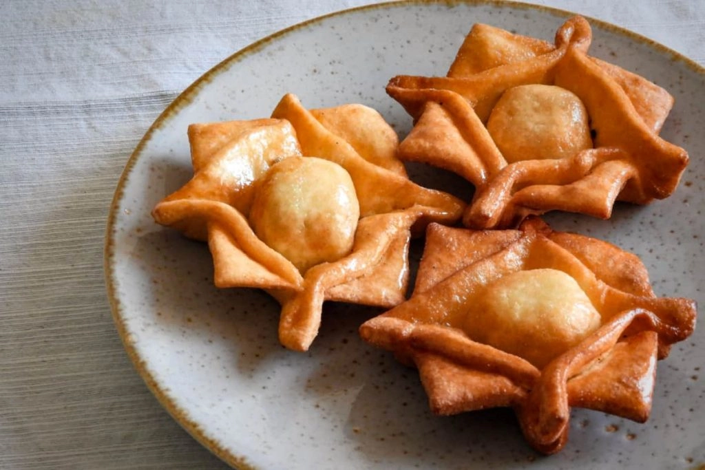
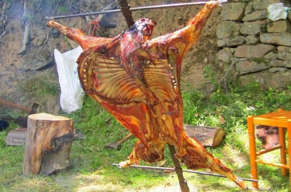

Conoce todos los servicios que te podemos ofrecer
Comidas tipicas del lugar

Pastelitos
Se trata de una masa crocante de hojaldre, rellena de dulce de batata o dulce de membbrillo, a elección de cada gusto personal, pero los más tradicionales son los de dulce de membrillo
Empanadas
Un plato típico de Argentina. Es “una fina masa de pan, masa quebrada u hojaldre con una preparación salada o dulce y cocida al horno o frita.

Cordero
El cordero asado es una preparación de la carne de cordero en forma de asado que se contempla como muy popular en diversos países y culturas.
Hospedaje